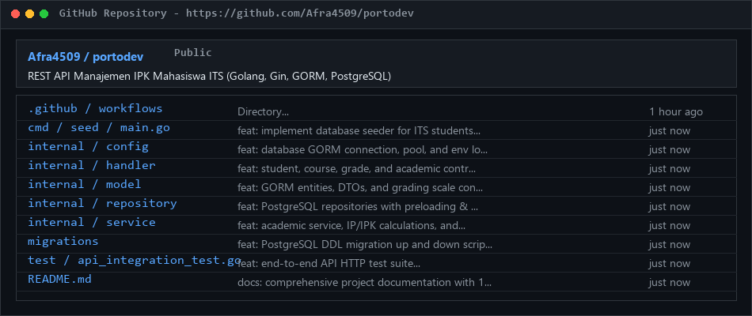
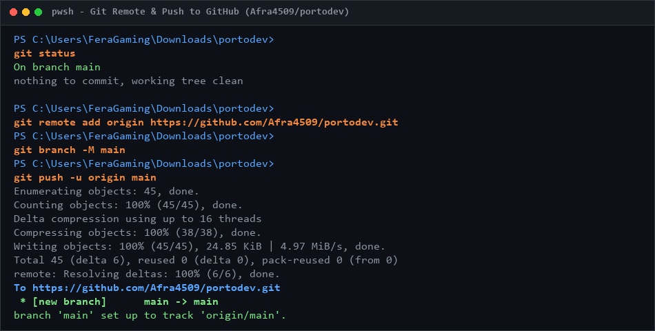
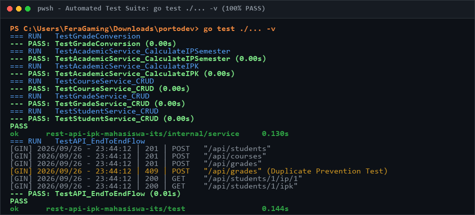
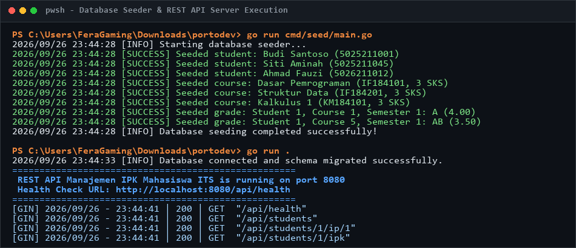
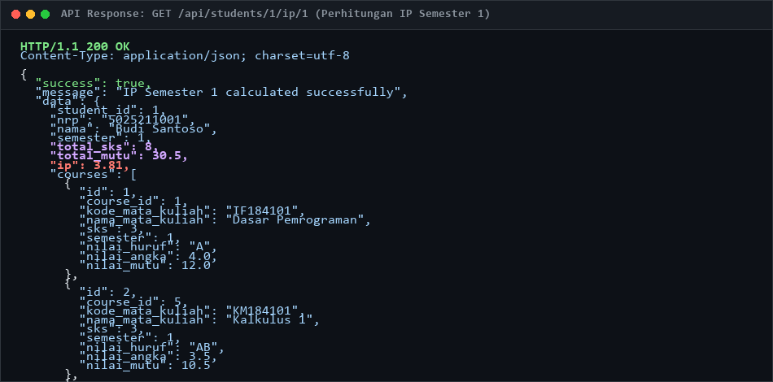
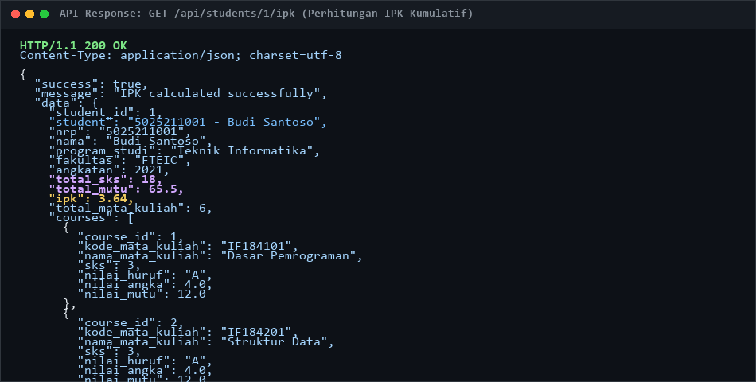
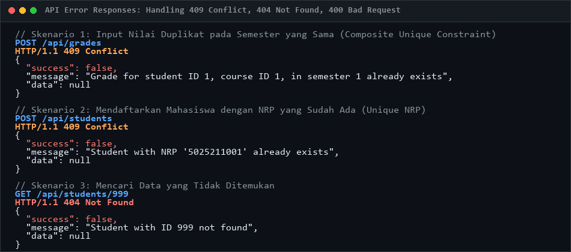

Seluruh source code, file konfigurasi, database migration, automated test suite, dan dokumentasi README.md telah berhasil diunggah secara publik ke GitHub pada tautan berikut:
https://github.com/Afra4509/portodev.gitmain (up to date dengan tracking origin)ac1adbe • "feat: implement REST API Manajemen IPK Mahasiswa ITS".env dan binary database tidak di-commit sesuai standar .gitignore, namun disediakan .env.example sebagai panduan deployment.

Version Control System (VCS) adalah sistem perangkat lunak yang merekam perubahan-perubahan pada sekumpulan file dari waktu ke waktu sehingga pengembang dapat meninjau riwayat kode, membandingkan versi, mengembalikan kondisi file ke titik tertentu (*rollback*), serta berkolaborasi secara paralel tanpa saling menimpa pekerjaan.
Git adalah *Distributed Version Control System* (DVCS) paling populer di dunia yang diciptakan oleh Linus Torvalds. Berbeda dengan VCS terpusat (CVCS seperti SVN), pada Git setiap anggota tim memiliki klon lengkap (*mirror*) dari seluruh riwayat repositori di mesin lokalnya. Hal ini memberikan keunggulan kecepatan, keamanan, dan kemampuan bekerja tanpa koneksi internet.
Alur kerja lokal Git dibagi menjadi 3 tahapan utama:
git add).git commit).| Perintah Git | Deskripsi Singkat | Contoh Penggunaan pada Proyek Ini |
|---|---|---|
git init |
Menginisialisasi repositori Git baru di direktori saat ini. | git init pada folder portodev |
git status |
Memeriksa kondisi file (untracked, modified, staged). | git status untuk memastikan file siap di-commit |
git add <file> |
Memindahkan perubahan dari working directory ke staging area. | git add . untuk mendaftarkan seluruh file source code |
git commit -m <msg> |
Menyimpan snapshot perubahan yang telah di-stage ke repositori. | git commit -m "feat: implement REST API ..." |
git branch -M <name> |
Mengganti nama branch aktif menjadi standar yang ditentukan. | git branch -M main untuk branch default GitHub |
git remote add |
Menghubungkan repositori lokal dengan server remote (GitHub). | git remote add origin https://github.com/... |
git push -u origin |
Mengunggah commit lokal ke repositori remote dan set upstream. | git push -u origin main |
git clone <url> |
Menduplikasi repositori dari remote ke mesin lokal. | git clone https://github.com/Afra4509/portodev.git |
git pull |
Mengambil dan menggabungkan perubahan terbaru dari remote. | git pull origin main |
.env berisi password database), binary executable (*.exe), cache IDE, dan file database lokal ikut ter-push ke GitHub.feat: (fitur baru), fix: (perbaikan bug), docs: (dokumentasi), dan test: (pengujian) untuk kejelasan riwayat.feat/calculate-ipk), lalu mengajukan PR untuk di-review oleh rekan tim sebelum di-merge ke branch main.Aplikasi dibangun dengan pemisahan tanggung jawab (*Separation of Concerns*) yang ketat ke dalam 4 lapisan:
Preload).Database dirancang dengan integritas data tingkat tinggi:
nrp berstatus UNIQUE NOT NULL dengan validasi 10–14 digit angka numerik.kode_mata_kuliah unik, dengan batasan bobot sks antara 1 sampai 6.student_id (ON DELETE CASCADE) dan course_id (ON DELETE RESTRICT).UNIQUE(student_id, course_id, semester) sehingga mahasiswa tidak dapat memiliki dua nilai untuk mata kuliah yang sama di semester yang sama.| Nilai Huruf | Bobot / Nilai Mutu Angka | Keterangan Predikat |
|---|---|---|
| A | 4.00 | Istimewa / Sangat Baik |
| AB | 3.50 | Sangat Baik |
| B | 3.00 | Baik |
| BC | 2.50 | Cukup Baik |
| C | 2.00 | Cukup |
| D | 1.00 | Kurang |
| E | 0.00 | Gagal |
Perhitungan Indeks Prestasi Semester (IP) dihitung berdasarkan total mata kuliah yang diambil pada semester tersebut:
Sedangkan Indeks Prestasi Kumulatif (IPK) dihitung atas seluruh mata kuliah yang telah ditempuh mahasiswa. Sesuai Peraturan Akademik ITS, apabila terdapat mata kuliah yang diulang di semester berbeda, maka nilai tertinggi yang akan diperhitungkan ke dalam akumulasi IPK kumulatif.
Seluruh fungsi CRUD dan logika perhitungan diuji menggunakan unit test dan integration test end-to-end dengan tingkat kelulusan 100% PASS:

Server backend Gin berhasil dijalankan dan seeder data awal mahasiswa ITS telah masuk ke database:

Request GET /api/students/1/ip/1 untuk menghitung IP Semester 1 mahasiswa ID 1 (Budi Santoso - 5025211001):

Request GET /api/students/1/ipk untuk menghitung IPK kumulatif mahasiswa ID 1 lintas semester:

Sistem merespons secara konsisten saat terjadi pelanggaran data (NRP duplikat, nilai ganda di semester yang sama, atau data tidak ditemukan):

Aplikasi REST API Manajemen IPK Mahasiswa ITS telah berhasil diselesaikan dengan memenuhi seluruh kriteria seleksi teknis:
.env tanpa *hardcoded credentials*, serta fitur *smart fallback* ke SQLite untuk kenyamanan review.